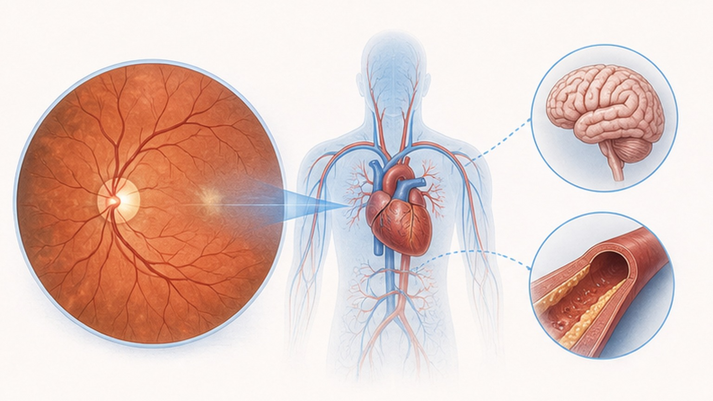
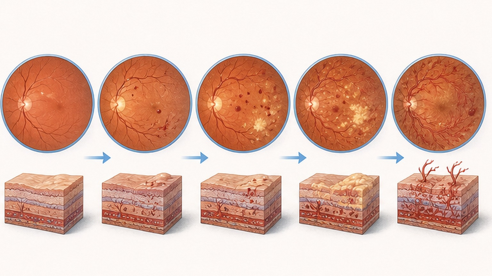
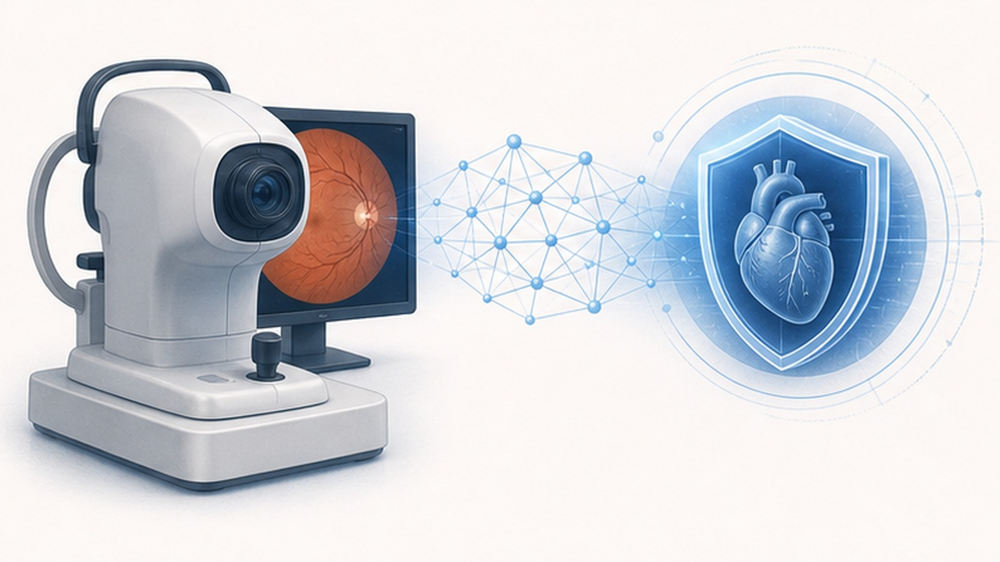
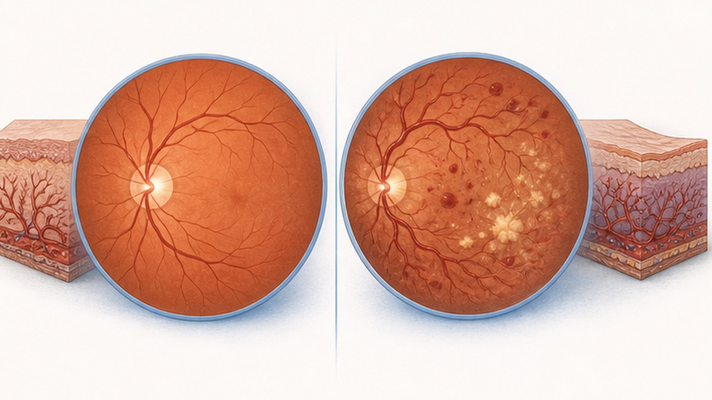

망막 사진은 혈관 상태를 보여 주는 도움 정보입니다
눈으로 온몸 건강을 살피는 분야를 ‘오큘로믹스’라고 부릅니다

눈 속 사진(안저 검사)에서 의사가 살피는 것들입니다
| 보이는 변화 | 어떤 모습인가 | 무엇을 뜻하나 |
|---|---|---|
| 동맥이 가늘어짐 | 망막 동맥이 정맥보다 눈에 띄게 가늘어집니다 | 오래된 고혈압 · 동맥경화의 초기 신호 |
| 동맥이 정맥을 누름 | 교차하는 곳에서 정맥이 끊긴 것처럼 보입니다 | 만성 고혈압 · 뇌졸중 위험 증가와 관련 |
| 망막 출혈 | 점이나 불꽃 모양으로 피가 번져 보입니다 | 혈관 벽이 약해졌다는 뜻 · 고혈압·당뇨 진행 |
| 솜털 같은 흰 반점 | 혈관이 막혀 신경층이 잠시 피를 못 받은 흔적 | 심혈관 위험과 직접 관련 |
| 노란 침착물 | 새어 나온 기름·단백질이 쌓인 노란 점 | 당뇨 망막병증 · 고지혈증의 흔적 |
| 시신경이 부음 | 시신경 가장자리가 흐려지고 부풀어 오릅니다 | 매우 높은 혈압 등 — 바로 평가 필요 |
단계가 높을수록 심장·뇌혈관 사건의 위험이 커집니다
초기에는 시력이 정상이라 정기 검사로만 찾을 수 있습니다

국내 허가를 받은 검사(닥터눈)의 흐름입니다

기대할 만한 결과지만, CT 검사와 같다고 말할 단계는 아닙니다
사진 속 혈관 모습의 차이가 위험 등급을 가릅니다

검사할지, 얼마마다 할지는 진료에서 함께 정합니다
망막이 떨어지거나 눈 속에 출혈이 생긴 응급 신호일 수 있습니다
눈과 심장은 같은 혈관으로 이어져 있습니다
QR로 다시 보기 · 검사 안내·비용·권장 대상은 검사 안내문을 드립니다